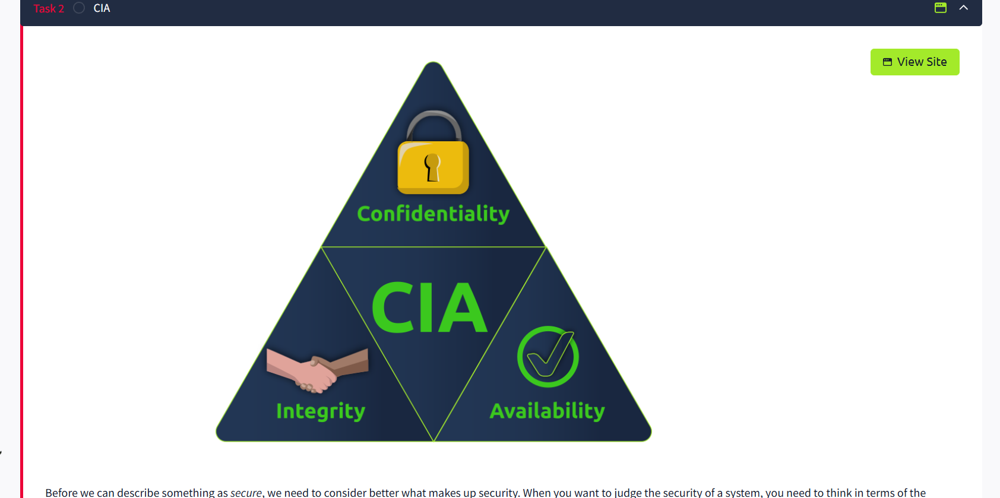
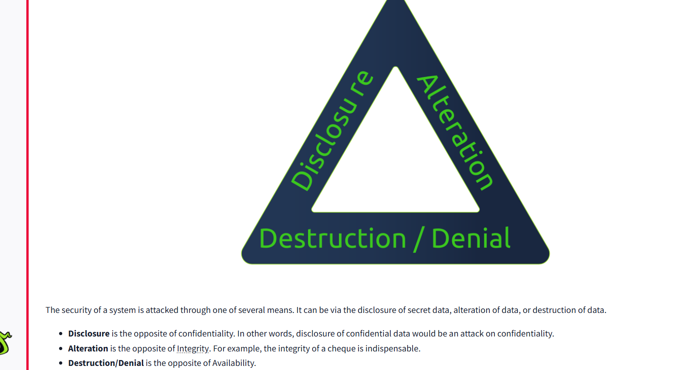
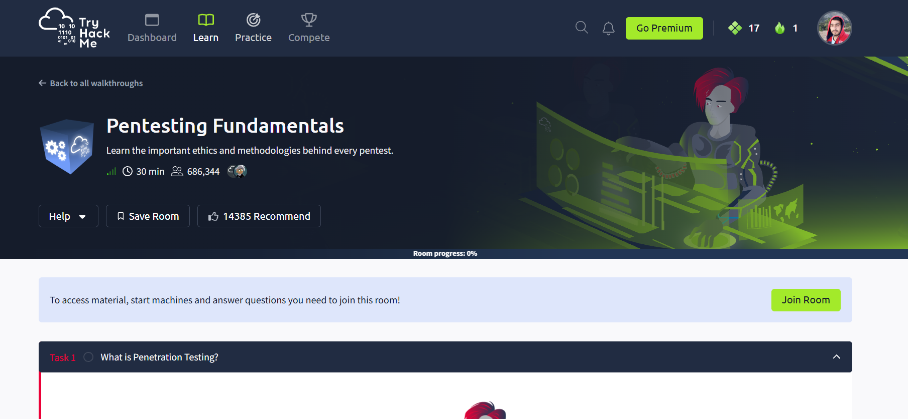
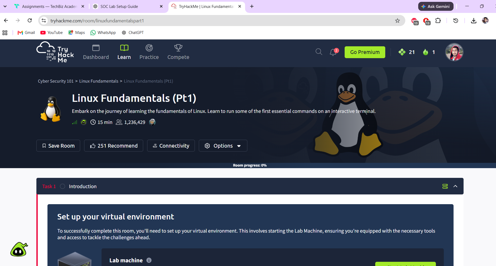
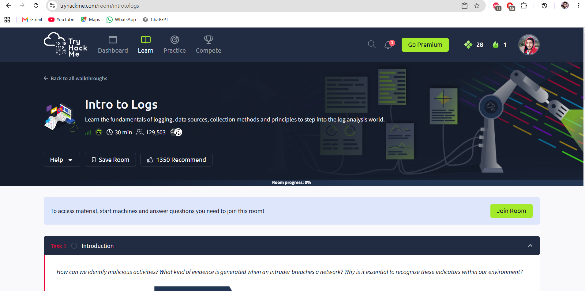
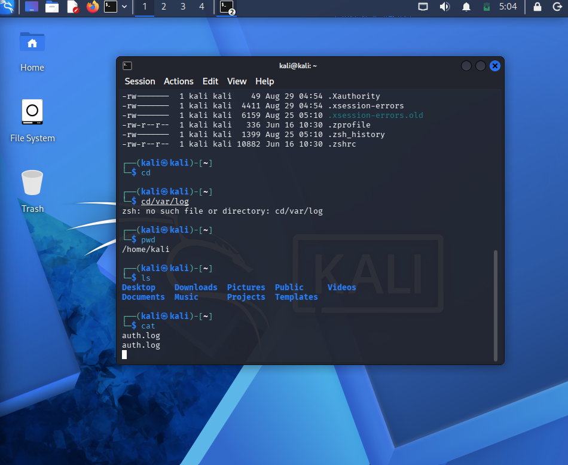
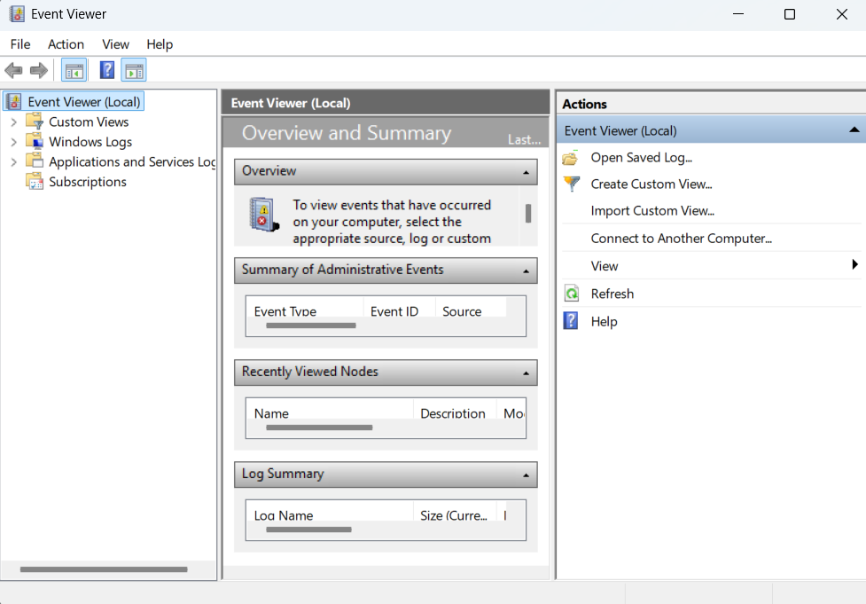
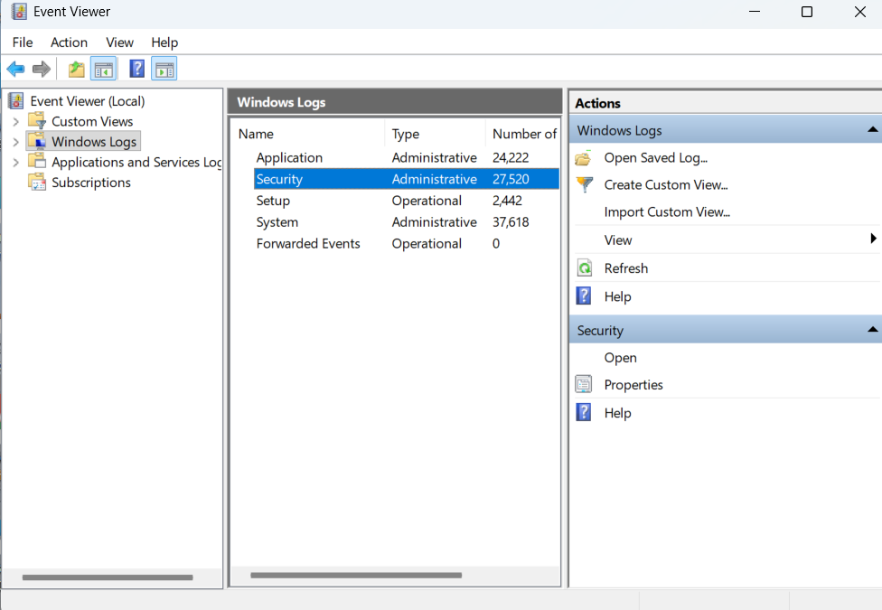

Ethical Hacking Basics, Network Hardening, Firewalls, ACLs, Vulnerability Assessment.
CYBERSECURITY • SOC • NETWORKING
Sachin Joshi
Aspiring Cybersecurity & SOC Analyst
B.Tech CSE graduate with hands-on exposure to networking, Linux administration, firewalls, log monitoring and security labs.
security@portfolio:~
$ whoami
sachin_joshi
$ target_role
SOC Analyst L1
$ interests
Cybersecurity
Network Security
Log Analysis
$ status
● READY TO LEARN & BUILD01
About Me
I am a B.Tech Computer Science & Engineering graduate building a career in cybersecurity, SOC operations and networking.
My practical learning includes Linux administration, network analysis, firewall/ACL concepts, log monitoring, vulnerability-assessment fundamentals and hands-on TryHackMe labs.
I enjoy learning by doing — working with command-line tools, packet captures, Windows Event Viewer and security-focused lab environments.
2025B.Tech CSE
CCNACertification
SOCCareer Focus
02
Technical Skills
SIEM concepts, log monitoring and incident-response fundamentals.
Linux administration, Kali Linux, command-line workflows and Bash fundamentals.
TCP/IP, VLAN, OSPF, DNS, DHCP, VPN, subnetting, routing and switching.
Wireshark and Cisco Packet Tracer for traffic and network analysis practice.
Python, C, Git and AWS Cloud Practitioner knowledge.
03
Projects & Practical Work
Network Monitoring & Firewall Lab
Configured VLANs, inter-VLAN routing, OSPF and static routes in Cisco Packet Tracer. Practised ACL-based traffic control and verification with packet-analysis concepts.
Packet TracerWiresharkACL
Log Monitoring & Investigation
Worked with Linux authentication logs and Windows Event Viewer to understand log sources, security events and investigation-oriented workflows.
Linux LogsWindows LogsEvent Viewer
Kali Linux Security Practice
Hands-on command-line practice, package management, system information and security-focused exercises in a Kali Linux environment.
Kali LinuxCLIBash
PRACTICAL EVIDENCE
Selected Lab Screenshots
Click an image to enlarge.








04
Learning & Labs
TryHackMe
Cybersecurity fundamentals, Linux, logs, security principles and penetration-testing fundamentals.
SOC / Log Analysis
Practised authentication and Windows security log review and security-event understanding.
Kali Linux
Command-line and security-lab practice in a Kali Linux environment.
Networking
Networking fundamentals with Cisco Packet Tracer and packet-analysis concepts.
TRYHACKME PROFILE
Open TryHackMe ↗View my hands-on learning profile
05
Certifications
CCNA
Cisco Certified Network Associate
NETWORKINGCybersecurity Career Program
SkillEcted
CYBERSECURITYAWS Certified Cloud Practitioner
Amazon Web Services
CLOUDCybersecurity Fundamentals
Cybersecurity Foundation
SECURITYComplete Python Bootcamp
Python Programming
PROGRAMMING05
Resume
Complete professional profile
View the current resume for education, certifications, skills and project details.
06
Let's Connect
Open to entry-level opportunities in cybersecurity, SOC and networking.
EMAILjoshisachin1598@gmail.com
PHONE9997236621
LINKEDINinkedin.com/in/sachin-joshi-688680183
Replace these three placeholders with your preferred contact details.